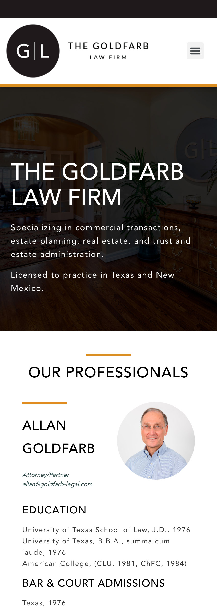
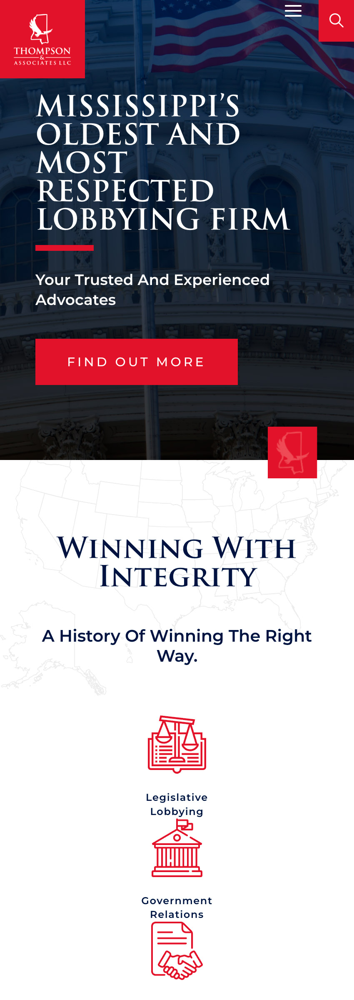

Space and Clean Design
The Goldfarb - Law Firm
goldfarblawfirmpllc.com As we can see here this website has a good distribution of the spacing between each section, image, heading, and text. I think the white space plays an important role to get a cleaned site.
Repetition
Thompson & Associates LLC
thompsonandassociatesllc.com This site has many repetitions in the color, the font, the style of icons, and so on. Regarding colors, I think red, white, and blue are repeated around this website.
Contrast
Claims Bureau USA
claimsbureau.com/On this website, we see a good contrast between the white and blue colors. Since logo until footer. They also chose some images which have blue and white colors.